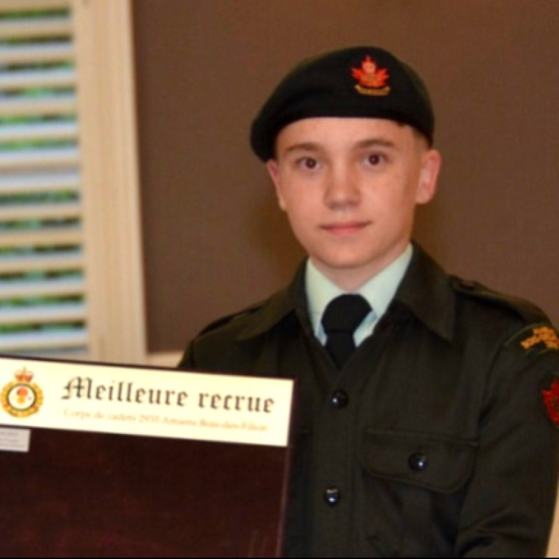
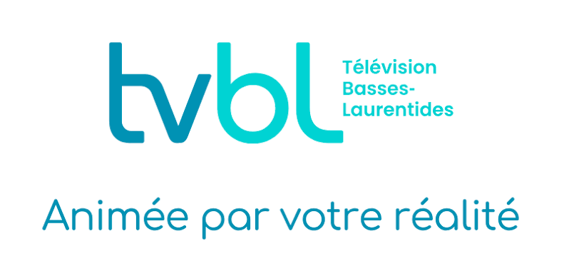
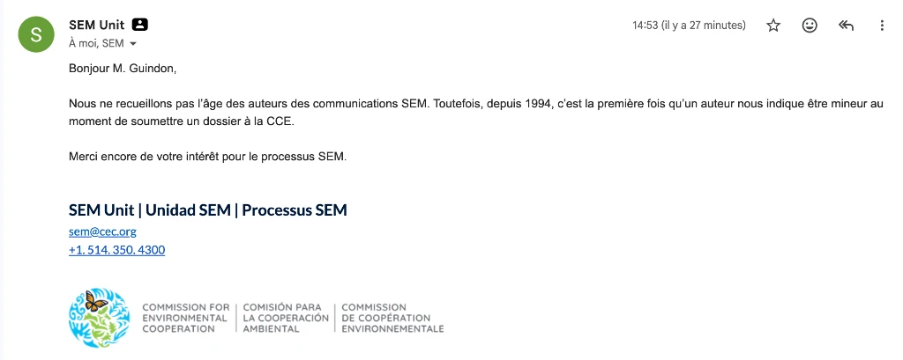

William Guindon
Militant écologiste québécois reconnu pour son engagement en faveur de la protection des écosystèmes et des droits des générations futures. À 15 ans, il porte le dossier de la Grande Tourbière de Blainville devant la Commission de coopération environnementale (ACEUM) et les Nations unies.
Sauvegarde de la Grande Tourbière de Blainville
Le Secrétariat de la CCE évalue actuellement la recommandation d'un dossier factuel indépendant.
« Même que l’usine soit conforme ou pas conforme, je veux juste la vérité. C’est ça mon but. »
— William Guindon, entrevue TVBL ↗
Tableau de bord — Dossier CCE SEM-26-003
État de la procédure internationale et échéances de protection de la Grande Tourbière
Les 4 chiffres clés du dossier
Superficie de tourbière visée pour l'expansion du dépotoir de déchets dangereux Stablex (Cellule 6).
Concentration de 0,016 mg/L mesurée en périphérie, jusqu'à 320 fois le critère de protection aquatique aigu (MELCCFP).
Attestation formelle de la CCE confirmant le premier auteur citoyen mineur en 32 ans de traité (ACEUM).
Avis défavorable du BAPE 371 contourné par une loi spéciale excluant tout recours judiciaire québécois.
Explorer les grands dossiers
Accédez directement aux portails spécialisés du site officiel
Revue de presse officielle
Sélection des reportages d'enquête et entrevues de référence dans les médias d'envergure.
Protection d’une tourbière à Blainville : Le combat d’un adolescent à l’ONU
« À 14 ans, William Guindon a saisi le Rapporteur spécial des Nations unies sur les substances toxiques pour dénoncer l'expansion de Stablex dans la Grande Tourbière. »
« François Legault, vous détruisez notre avenir »
« Lettre ouverte percutante adressée au premier ministre du Québec au lendemain de l'adoption sous bâillon du Projet de loi 93 facilitant l'agrandissement du site. »
CBC Podcasts : This Is Montreal
« Grand format audio et baladodiffusion de CBC News sur les enjeux métropolitains de la région de Montréal et la mobilisation pour la Grande Tourbière. »

Juillet 2026Entrevue exclusive : La démarche historique devant la CCE
« Entrevue télévisée approfondie avec William Guindon expliquant les recours internationaux en vertu de l'ACEUM et la protection de la Grande Tourbière. »
Dernières publications & Photos récentes
Suivez les derniers articles d'analyse et les photographies authentiques de la Grande Tourbière de Blainville et du dossier CCE SEM-26-003.

Preuve CCEConfirmation officielle CCE : Premier mineur de l'histoire du mécanisme SEM (depuis 1994)
Le Secrétariat de la CCE confirme formellement par écrit que William Guindon est le premier mineur en 32 ans à déposer une communication citoyenne.
Avis de clarification publique : Absence de collaboration et stricte indépendance
Mise au point officielle de William Guindon rappelant le caractère strictement individuel et autofinancé du dossier SEM-26-003.
Plaidoyer pour l'autonomie juridique des adolescents : briser le plafond de verre de l'âgisme
Face au paternalisme bureaucratique, William Guindon interpelle les parlementaires pour reconnaître la capacité civique des 14-17 ans.

À propos de William Guindon
Militant écologiste et auteur de la soumission SEM-26-003 à 15 ans
William Guindon (né en 2011 au Québec) est un citoyen et militant écologiste engagé pour la défense des écosystèmes menacés et le respect des droits environnementaux des générations futures. Intervenant dès l'âge de 12 ans au BAPE 371, il a mobilisé les conventions internationales (CCE / ACEUM, ONU) pour faire respecter les lois environnementales face à l'expansion d'un des plus grands sites d'enfouissement de déchets dangereux au Canada.
La Grande Tourbière de Blainville est située sur les territoires ancestraux non cédés des Premières Nations, notamment les Kanien'kehá:ka et les peuples Anishinaabeg. Cette mobilisation s'inscrit dans la responsabilité collective et intergénérationnelle de préserver les milieux humides rares.
Documents juridiques & Soumissions
Consultez l'ensemble des 222 pièces probatoires versées au registre international CCE
Dossier CCE SEM-26-003 · 222 pièces au registre
Détermination positive de la CCE (17 août 2026), réponse officielle du gouvernement du Canada (16 oct. 2026), observations citoyennes complémentaires (1er nov. 2026), déposition ONU et pétition 0546 au BVG.
Questions fréquentes (FAQ)
Tout comprendre sur les démarches citoyennes et le dossier SEM-26-003
Qui est William Guindon ?
William Guindon (né en 2011 au Québec) est un militant écologiste québécois et étudiant dans les Laurentides. Auteur de la communication SEM-26-003 déposée à 14 ans, il devient à 15 ans le premier mineur dans l'histoire des Soumissions environnementales (SEM) à obtenir une détermination positive de recevabilité devant la Commission de coopération environnementale (CCE / ACEUM). Consultez sa biographie détaillée, la chronologie Stablex ou la fiche de presse.
Qu'est-ce que le dossier SEM-26-003 auprès de la CCE ?
La communication SEM-26-003 (« Enfouissement de matières dangereuses à Blainville ») dénonce le défaut d'application des lois environnementales fédérales canadiennes (oiseaux migrateurs, espèces en péril, rejet de cadmium) dans le cadre de l'expansion du site Stablex dans 278 000 m² de milieux humides. Retrouvez la chronologie complète du dossier.
Pourquoi la Grande Tourbière de Blainville est-elle menacée ?
La Grande Tourbière de Blainville abrite une biodiversité exceptionnelle et constitue un puits de carbone majeur. Le projet d'expansion autoriserait l'enfouissement de millions de tonnes de résidus, détruisant 278 000 m² d'écosystèmes rares et posant des risques pour les eaux où des concentrations de cadmium ont été mesurées jusqu'à 320 fois le critère de qualité de l'eau pour la protection de la vie aquatique (toxicité aiguë, MELCCFP, échantillon du 2 déc. 2023). Visualisez les périmètres sur la carte interactive SIG.
William Guindon a-t-il reçu la réponse officielle du gouvernement du Canada ?
Oui. Le 16 octobre 2026, le gouvernement du Canada a formellement déposé sa réponse officielle (pièce 72-RSP) auprès du Secrétariat de la CCE. William Guindon en a reçu notification et a déposé le 17 octobre 2026 un mémoire d'observations en 7 moyens juridiques réfutant la tentative d'évitement d'Ottawa et demandant la constitution d'un Dossier factuel indépendant.
Quelles sont les prochaines étapes suite au dépôt de la réponse du Canada ?
Suite au dépôt de la réponse du Canada le 16 octobre 2026 et des observations citoyennes le 17 octobre 2026, le Secrétariat de la CCE examine le dossier en vertu de l'article 24.28 de l'ACEUM pour déterminer s'il recommande l'élaboration d'un Dossier factuel indépendant soumis au vote du Conseil des ministres trinational. Suivez le suivi de procédure en direct.
Canaux officiels & Publications
Suivez les interventions publiques et déclarations de William Guindon
Coordonnées, Médias & Canaux Sécurisés
Vous pouvez joindre William Guindon directement et en toute simplicité par courriel officiel, ou utiliser le canal chiffré décentralisé ci-dessous :
Contacter William Guindon par courriel
Ce canal officiel est direct et accessible à tous : citoyennes et citoyens, journalistes, scientifiques, étudiants ou organismes. Pour toute question, suggestion ou échange relatif à la Grande Tourbière de Blainville et au dossier SEM-26-003 :
Veille documentaire & Suivi en accès libre (Flux RSS) Suivez les publications, communiqués et mises à jour CCE sans aucun profilage ni collecte de courriel
Pour garantir une indépendance intégrale et respecter strictement votre vie privée (zéro collecte de courriel, zéro base de données externe), ce site ne diffuse aucune infolettre commerciale. Toutes les mises à jour citoyennes, communiqués de presse et développements du dossier CCE SEM-26-003 sont distribués en temps réel via syndication libre et ouverte.
Garantie vie privée par conception : Le flux RSS est lu directement par votre agrégateur local (NetNewsWire, Feedly, Thunderbird, etc.) sans inscription préalable, sans témoin de connexion et sans transmission d'adresse de contact.
Canaux confidentiels, gros fichiers & Méthodes chiffrées (Session, SwissTransfer, OpenPGP, Proton) Communications chiffrées, transferts volumineux (≤ 50 Go) et anonymat pour lanceurs d'alerte, journalistes et citoyens
Pour transmettre des documents sans exposer votre adresse IP ni associer de numéro de téléphone, l'application chiffrée décentralisée Session est disponible :
05dc60b62a6ed477b1f0dc5ce1b6a9db7603bf39f1a0efe13c68d63a6cb8a7c072
État du service : Le module de clavardage web direct est temporairement désactivé pour maintenance. Veuillez privilégier Session ou le courriel. (Voir la page messagerie ↗)
Pour chiffrer vos communications par courriel de bout en bout ou vérifier l'authenticité de mes messages signés :
1CAF 48B1 53AC 7DA2 996D 65B2 1EFC 7E58 63D8 FD77
Pour communiquer par courriel tout en préservant votre anonymat complet (sans numéro de téléphone exigé ni traçage publicitaire), vous pouvez créer une adresse chiffrée gratuite sur Proton Mail.
Pour transférer des dossiers lourds ou des pièces volumineuses sans inscription, le service suisse sécurisé SwissTransfer (Infomaniak, serveurs 100 % suisses, chiffrement LUKS/AES-256) est recommandé. Détails des garanties : Politique de confidentialité ↗ et Protocole OPSEC ↗.